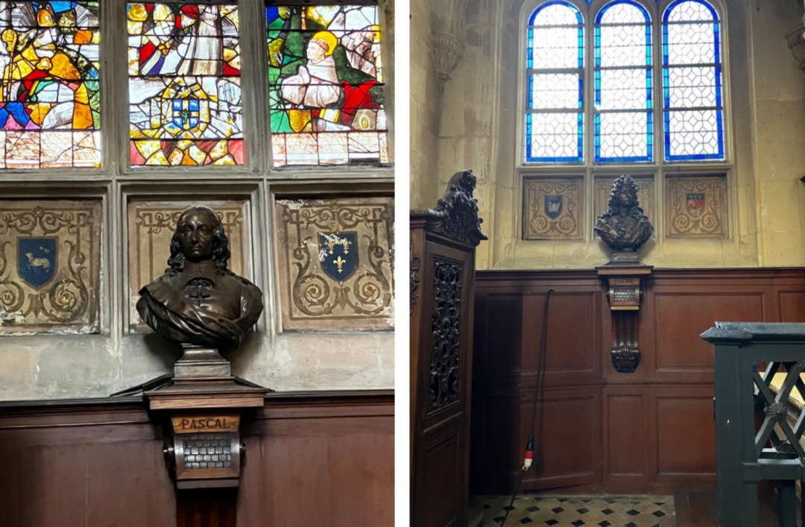
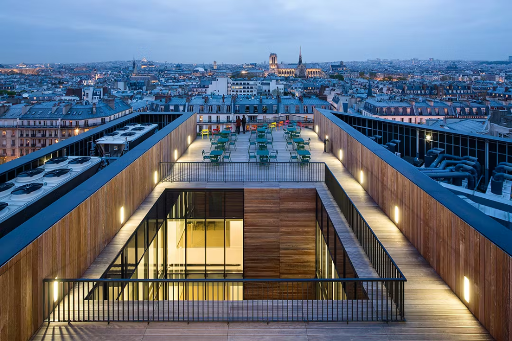
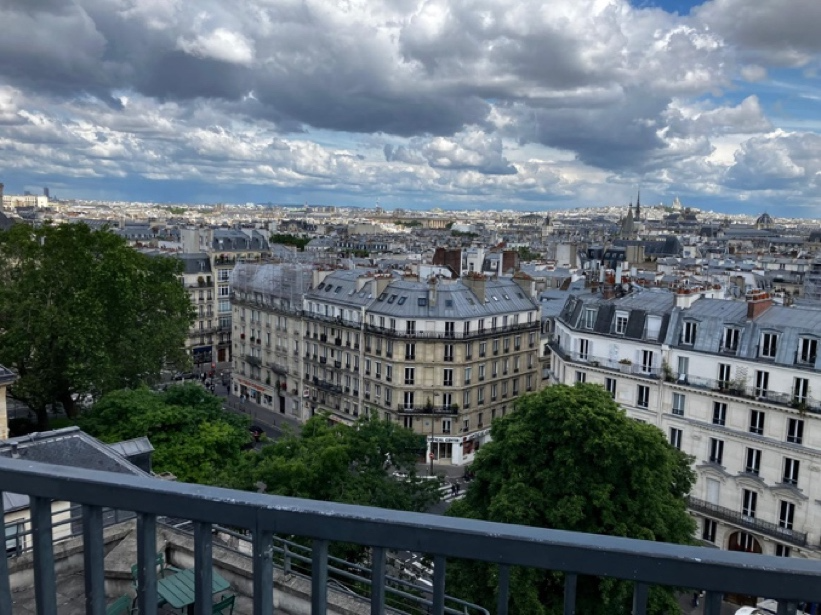
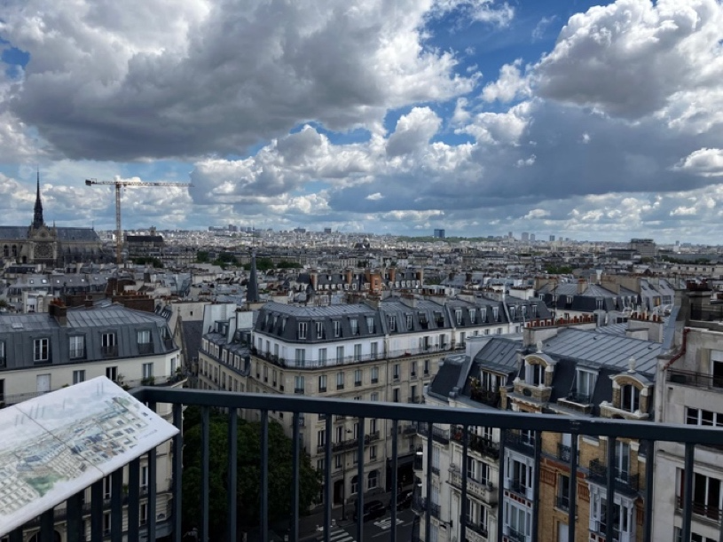
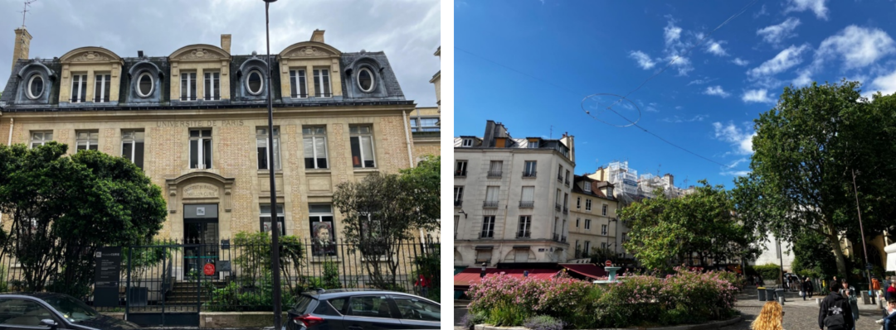

在法兰西公学院的阳台上，望见不妥协的灵魂
时间：2026.05.29
作者：卡洛
来源：返朴
在巴黎左岸的拉丁区
Collège de France (法兰西公学院) 是一个独特的机构，世界上很难找到第二个。它由法王弗朗索瓦一世于1530年创立，是法国地位崇高的公立高等研究与教学机构。它不设固定专业，也不颁发任何学位，而是汇聚了全法乃至世界顶尖的学者 （研究范围涵盖数学、物理、化学、生物、哲学、社会学、历史、语言学 …… 等等广阔的领域），他们不按照预定的教学计划向学生们照本宣科，而是每年用讲座的方式向大众展示自己最新的研究成果，而且这些讲座完全免费面向公众开放，无需注册或报名，任何人都可以走进阶梯教室听课。五百年来，这个学院一直在践行着其核心精神：Docet omnia (拉丁语：向所有人传授知识)。历史上多少泰斗级的人物都在这里向大众分享人类最新、最前沿的知识与科研成果，包括思想家米歇尔·福柯 （Michael Foucault）、哲学家亨利·柏格森 (Henri Bergson)、历史学和考古学家让-弗朗索瓦·商博良 （Jean-Francois Champollion）、数学家傅里叶 (Joseph Fourier) 、若尔当 (Camille Jordan)和刘维尔 (Joseph Liouville)、物理学家安培 （André-Marie Ampère）和我们后面要提到的朗之万 （Paul Langevin）……这里称得起法兰西民族知识传播和学术自由传统的化身。
左图：阳光下拉丁区的圣热纳维耶芙山（Montagne Sainte-Geneviève）山顶的先贤祠（Panthéon）
右图：先贤祠一侧的高乃依塑像（另一侧是卢梭的塑像）和远景中的圣艾蒂安迪蒙教堂（Église Saint-Étienne-du-Mont）教堂
法兰西公学院所在的巴黎塞纳河左岸拉丁区 （Quartier Latin），从中世纪以来就是知识分子、文化人和青年学生汇集的地方，拉丁区这个名字就是因为巴黎的老百姓觉得拉丁区里来自世界各地的知识分子们除了在学校里说拉丁文 （中世纪时学术和宗教的通用语言），在街头酒馆喝酒、去市场买菜时也说拉丁文，所以这样称呼这个区域。
在近千年的时间里，多少为人类文明做出不朽贡献的人物都在生于斯、死于斯，不必说在雄伟的先贤祠 （Panthéon）中供奉的伏尔泰 （Voltaire）、卢梭 （Jean-Jacques Rousseau）、雨果 （Victor Hugo）、左拉 （Émile Zola）、大仲马 （Alexandre Dumas），还有我们后文会反复提及的居里夫妇 （Marie & Pierre Curie）和朗之万，就是在先贤祠后面的圣艾蒂安迪蒙教堂 （Église Saint-Étienne-du-Mont）里随便走走，笔者就看到了帕斯卡 （Blaise Pascal）和拉辛 （Jean Racine）的纪念龛，而且两人还是邻居。

巴黎塞纳河左岸拉丁区是文明发生和传承的地方。在先贤祠后面的圣艾蒂安迪蒙教堂（Église Saint-Étienne-du-Mont）中，笔者无意中遇到了数学家、物理学家和哲学家帕斯卡Blaise Pascal(左图）和古典主义剧作家、诗人让·拉辛Jean Racine（右图）的纪念龛和墓地，而且他们还在这里做了邻居。
如今的拉丁区依然是巴黎甚至是欧洲的文化心脏，这里不仅有巴黎高等师范学院 （École normale supérieure）、索邦大学 （Sorbonne Université / La Sorbonne）、先贤祠、法兰西公学院，还有全巴黎最密集的独立书店、艺术电影院和充满活力的学生咖啡馆。
今年5月里，笔者在巴黎参加学术会议与法国研究量子多体计算与多体纠缠的学者们交流，其中有法兰西公学院的朋友盛情邀请，说要带我去公学院游览一处独特的景观。我欣然接受，于是就在一个巴黎春天的中午，在谈笑间身体就站上了法兰西公学院物理学大楼最高层那个著名的阳台。

法兰西公学院的阳台
从这个阳台上可以俯瞰整个拉丁区，甚至是整个巴黎的景观。近处有索邦大学、先贤祠，还有巴黎特有的优雅的锌皮屋顶住宅楼和烟囱；远处有巴黎圣母院 （Notre-Dame）、卢浮宫 （Louvre）、埃菲尔铁塔 （La Tour Eiffel）；视线尽头还有蒙马特高地 （Montmartre）和高地上洁白的圣心大教堂、拉雪兹神父公墓 （Cimetière du Père-Lachaise）的郁郁葱葱的绿意，……整个巴黎都在人的眼前铺开。这个法国的首都，欧洲的首都，这个美好年代 （Belle Époque）——那个最乐观、狂热、科学和艺术交织的黄金时代——里整个世界的首都，在一百多年后的今天，在这个5月春天里的阳光和云朵之下，坦诚、自信、优雅，好像街道上的时尚从容的巴黎人一样在我眼前真实地呈现出来。
在法兰西公学院的阳台上眺望巴黎圣母院，2019年大火之后的维修已接近完成
公学院旁边的索邦大学，青年的玛丽·居里和皮埃尔·居里分离镭的简陋实验室就在这附近，中年的玛丽·居里和朗之万的幽会的小公寓—他们的爱巢—也在这附近，还有远处云端下的埃菲尔铁塔

在阳台上向左望，越过拉丁区的特有的锌皮屋顶，城市迤逦排开、无边无际，视线最远处依稀可以看到蒙马特高地上洁白的圣心大教堂，当年那里是毕加索、海明威、亨利·米勒等等一众艺术家流连创作之处

在阳台上向右望，越过圣母院和塞纳河，阳光下的巴黎一路推进到远处天际下那一片绿地，那里是著名的拉雪兹神父公墓，肖邦、傅立叶、巴尔扎克、巴黎公社…… ，多少往事都在那里沉淀
玛丽居里、朗之万和肖邦的故事
站在这个阳台上，看着文明和文化的历史呈现在我的眼前，作为物理学从业人员和业余人文主义爱好者的我，在感叹之余想起发生在巴黎的物理学和音乐的故事——关于科学、艺术和个人自由选择和表达的故事；更加准确地说，是想起了玛丽·居里和朗之万，还有肖邦的故事。想着想着，阳光下的我渐渐出神了，后来还是在朋友的提醒下才回过神来继续当日下面的行程。但是彼时阳台上的思绪是如此的有趣，我不舍得让它随着时间消逝，在访问结束后赶忙记录下来，就变成了这篇文字。
下面请允许我开始用磕磕绊绊的语言，讲述那几分钟脑中闪过的所思所想。
左图：阳光下的圣母院、塞纳河和天边的云。右图：塞纳河的柔波和远处的卢浮宫
离这个阳台不远的地方，就是青年时的玛丽·居里和她的丈夫皮埃尔·居里发现放射性元素镭的实验室，那其实是一个夏天闷热、冬天寒冷刺骨的简陋工棚，贫寒的居里夫妇日以继夜地搅拌着成吨的沥青铀矿残渣，经过数年的努力 （1898年-1902年），他们在极其艰苦的条件下成功从8吨矿渣中提炼出了0.1克的散发着淡蓝色荧光的氯化镭，这样的发现让居里夫妇成为著名的科学家，并在1903年获得诺贝尔物理学奖，更让来自波兰一文不名的玛丽·斯克沃多夫斯卡 （Maria Skłodowska）成为了世人所知的居里夫人。
但是好景不长，皮埃尔1906年因为车祸意外逝世，仍然盛年的居里夫人成了寡妇，皮埃尔的逝世给她带来了毁灭性的精神打击，不过一如她一生的行事，居里夫人最终坚强地挺了过来，并接替了皮埃尔在索邦大学的教授职位 （成为索邦大学历史上第一位女教授），继续着他们共同的科学事业。时间不断往前流淌，人们似乎接受了居里夫人总是穿上黑色的长裙，并因长期接触放射性物质而脸色苍白的一幅科学修女或者圣徒的形象，彼时保守的法国社会似乎没人觉得她也是一个有爱有恨有血有肉的中年女人。
到了1910年左右，距离皮埃尔去世已经过去了4年，居里夫人一直深陷在孤独与高强度的科研工作中，彼时她大约43岁。也就在这时，她和皮埃尔的得意学生，小她5岁的理论物理学家保罗·朗之万 （Paul Langevin，1872—1946）发生了一场轰动社会的恋情。这恋情和之后玛丽·居里的人生，正是我在阳台上想到的个人选择和个体自由表达的故事的主线，但在深入此事之前，请允许笔者岔开一笔，略及朗之万动力学方程 （Langevin equation）在量子多体中研究中的应用。
朗之万方程和投影哈密顿量
朗之万方程原本是朗之万在1908年提出的用微观力学方法解释水中的花粉粒子布朗运动的微分方程，不同于爱因斯坦直接从概率密度函数出发的宏观做法，朗之万从每个花粉粒子所感受到的微观环境出发，开创性地将“牛顿力学”与“概率随机震荡”结合在了一起，这个方程也因此成为了现代随机过程 （Stochastic Processes）和统计力学的基石。朗之万方程背后隐藏着一个极其深刻的物理学原理——涨落耗散定律 （Fluctuation-Dissipation Theorem），它解释了花粉粒子在水中的运动轨迹是方程中的随机涨落项和确定性阻力项共同作用之下的效果。
时间过去了一百多年，朗之万动力学方程已经变成了科学上描述随机过程的通用语言，在笔者从事的量子多体物理学研究中也影响深远并仍然具有生命力。在笔者的行业中，朗之万方程首先被用来提高高能物理量子场论格点模型的路径积分蒙特卡洛抽样效率[1]。研究人员 （包括因重整化群而获得诺贝尔物理奖的K. G. Wilson，见参考文献中的注释）通过随机噪声和对于系统本征作用量的导数的联合作用——一如朗之万在处理花粉的布朗运动中引入的随机涨落项和确定性阻力项——完成对于多体系统路径积分构型的集体更新。这样做既可以减少计算的时间 （集体更新的计算操作数少于传统的蒙特卡洛局部更新），又让构型的更新体现出多体系统的本征动力学行为，保证了更新的有效性。
更进一步，朗之万方程也出现在目前如火如荼的朗道能级投影哈密顿量[2]和关联平带投影哈密顿量[3] （也就是二维量子莫尔材料——如转角石墨烯和分数陈绝缘体——的基本模型）的研究中。不同于传统的具有局域相互作用的量子多体模型 （如 Hubbard 模型或者 Heisenberg 模型），关联平带模型所使用的投影哈密顿量，因为投影基函数的引入而变得具有长程相互作用，这就使得用来求解局域相互作用模型而开发的量子蒙特卡洛计算技术在处理这样的问题时变得笨拙和低效。
为了解决这样的问题， 研究人员们 （也包括笔者和合作者正在进行的研究）开始意识到，使用朗之万方程所代表的、既包含随机过程特征又体现系统本征动力学梯度矢量的集体更新，才是解决如朗道能级投影哈密顿量或者关联平带投影哈密顿量这样新的量子多体问题的正确方法。这样的蒙特卡洛集体更新方法，既减少了计算复杂度，又因为遵从系统本身的动力学行为而保证接收概率。新的尝试和新的物理结果正在不断出现，拓宽着人们的视野[2, 3]。这个方向的研究，也是笔者此次巴黎之行和当地学界讨论的一个方向。
玛丽·居里和肖邦的个人选择和表达
但让我们再把叙事拉回玛丽·居里和朗之万，朗之万比玛丽小5岁，彼时也正深陷在自己糟糕且充满暴力的婚姻里，日常的接触让玛丽和朗之万这两个同样孤独且在科学上高度共鸣的灵魂最终走到了一起。
他们在索邦大学附近租了一个简陋的小公寓 （离法兰西公学院的阳台不远），这里成为了他们远离喧嚣的“安全屋”。每天结束高强度的实验室研究工作后，他们会在这里私会，一起做饭、喝茶、讨论最新的物理学进展，相互抚慰和激励。在这场爱情中，玛丽做为一个成年的女性，坦诚和真实地表达出对于爱和性的要求，她写给朗之万的信件让我们看到了一个真正的人，而不是“科学圣女”的内心。
“我们曾经在那个小房间里的拥抱和亲吻，是我在冰冷的实验室里唯一的慰藉。”
“一想到我们可能会被分开，我就浑身发抖……我是如此需要你的抚摸、你的亲吻，需要我们那间把世界隔绝在外的小房间里，感受到你的身体紧贴着我的身体。 我活着，似乎只为了那些能够完全属于你的时刻。”
这样的话还有很多，此处也没有必要过度引用，但这些玛丽写给朗之万的情书充满了女性觉醒和人性欲望的真实记录，让我们看到玛丽不是教科书里那个没有情感、只会盯着放射性元素的“科学石雕”，而是一个有血有肉、会嫉妒、会疯狂陷入热恋、极度渴望爱人的抚摸、亲吻与肉体温存的真实女性。这些真实的字句，恰恰让她的形象变得更加完整和感人。
但又一次好景不长，才一年左右的时间，到了1911年，玛丽的信被朗之万的妻子截获并曝光给了媒体，霎时引起了巨大的丑闻，小报甚至用“波兰荡妇”这样的话来侮辱她。更加糟糕的是，1911年底正是她第二次获得诺贝尔奖 （化学奖）的时间节点，社会上的保守势力和科学界的道学家们也有了让她放弃的讨论，瑞典科学院的成员甚至写信给她，说到：
此时深陷在舆论漩涡和压力中的波兰女子玛丽，又一次展示出她的坚韧和对于自己内心的遵从，她回信说：
她在1911年底仍然顶着所有的风暴，以一种极其高傲的姿态去斯德哥尔摩领奖。从瑞典回来之后，她和朗之万的恋情由于社会的压力不得不中断，她本人更因为长期的疾病和由风波带来的精神压力闭门谢客一年之久。
后来走出阴霾的玛丽变得更加忠于自己的内心，不屑于和社会和科学界的虚伪为伍，她并没有向社会妥协做一个唯唯诺诺的“失足寡妇”，躲在拉丁区的实验室里闭门思过，而是用自己的方式继续科学创造和生活。
到了第一次世界大战的时期，她意识到X光拍照对于医疗检查的重要性，不但考取了卡车驾驶执照并自学了汽车维修，而且亲自开着装有X光设备的卡车奔赴前线，为伤兵做当时仍是十分稀少的X光拍照检查伤口。她带着17岁的大女儿伊雷娜 （伊雷娜和她的丈夫——也就是玛丽的女婿在1935年因发现人工放射性获得诺贝尔化学奖），冒着德军的炮火，把20辆X光车和200个战地放射科站点直接开到了最危险的战壕边缘。她还亲自培训了150名女性放射技师，让X光车可以常年顶着炮火在凡尔登、马恩河等最危险的战区之间穿梭。据统计，仅这20辆车就为前线数十万名刚刚从战壕里抬下来的重伤员进行了紧急筛查，帮军医在感染爆发前的黄金时间内取出了弹片。
战争结束后，由于她拯救了无数法国士兵，法国政府上上下下感到无比羞愧。为了挽回面子，政府提出要给她颁发法国最高荣誉——法国荣誉军团勋章 （Légion d'honneur）。但居里夫人的回应居然是：直接拒绝。这是她对主流世俗社会、对那些曾试图用道德审判毁灭她的官僚政客和科学界的假道学，进行的一场最不妥协的“精神反击”，她用自己的行为实践着个体生命的自由表达的权力。

左图：今日的居里夫妇博物馆，这里是居里夫人中后期工作、研究长达20年的地方，也是她的女儿和女婿发现人工放射性的诞生地，现时是居里研究所的一部分。右图：拉丁区的艺术氛围无处不在，拉丁区的小巷和街心花园还像着一百年前那样平静和优雅，好像玛丽·居里和朗之万刚刚结束一天的工作从这里走过，兴冲冲地走向他们的爱巢
同样的遵从于自己内心的选择，同样对于个体自由表达的执着，同样的巴黎故事，也体现在玛丽居里的波兰同乡，钢琴家肖邦 （Frédéric Chopin，1810—1849）的身上。肖邦的成名和社会赞誉都是在巴黎取得的，他是巴黎沙龙的宠儿，浪漫主义音乐和伤感时尚的代言人。
但是到生命的晚期，在诸多病症折磨之下，又和爱人乔治·桑感情破裂分手，他开始离群索居，不再关心沙龙或者音乐会的演出，不再参与巴黎上流社会的社交活动，而是把自己关在家里埋头作曲。他这个时期的音乐不再是人们熟悉的Polonaise (波兰舞曲)或者 Sonata （奏鸣曲）时期的肖邦，不再像早期那样悦耳和怡人，不再顺从古典的格式，叙事也不再有他那招牌式的少年愁绪，甚至不再向巴黎解释波兰；而是转向极其个人化的内心独白，乐曲和声游移而又情感克制，在极致的平静中隐藏着极大的不确定性。他这个时期的音乐是一个创造性的艺术家对于生命流逝和悲凉的平静言说，是一个伟大的灵魂在衰弱的肉体束缚中，在即将熄灭之前的最后的光芒。
站在法兰西公学院阳台上的我就是在这样的神游中，脑中冒出来肖邦后期的夜曲 （Nocturnes，Op. 62 No.1/No.2），玛祖卡 （Mazurkas, Op. 63, 67）和幻想波兰舞曲 （Polonaise-Fantaisie，Op. 61）的旋律。这里面蕴涵着即兴表现 （improvisation）的精髓，这样的穿透力甚至启示了一百年后的爵士乐和蓝调精神。
这是肖邦在独自面对死亡的时候，不再需要掌声和崇拜者，就像玛丽居里不再需要世俗的荣誉，而是遵从于自己的内心，在琴键上把个体生命中无法言说的痛苦：疾病、乡愁和情感生活的坎坷，用深邃的现代性的语言，克制却又准确地表达出来的真诚尝试。这样忠于自我、忠于个体自由表达的创作是肖邦艺术的高峰，到今天还在感动着我们。
站在法兰西公学院的阳台上，看着巴黎在眼前铺开，我想到的归根结底还是个人选择和个人的自由。就在离这里不远的实验室中，年轻的玛丽·居里正吃力地推着装满沥青铀矿渣的小车去提炼镭，没有人强迫她，她付出的辛劳都是自愿的；也是在离这里不远的公寓里，中年的居里夫人在完成了一天的工作后，正在和自己的情人朗之万相会，用同样发乎内心的爱情滋养科学和创造；更是在离这里不远的路上，一战时的居里夫人正准备驾驶X射线医疗车奔赴战场，她不屑于和法国国家官僚机构为伍，甚至用诺贝尔奖金 （还准备熔化诺奖奖牌成黄金原料换钱，被震惊的银行职员劝止）资助自己的X射线卡车。她用这样的决绝来反抗世俗对她的压制，和伪善的科学界切割，忠诚地实践着个体生命的自由表达。
人们说战争结束后，她常常独自在实验室中观察着闪烁着荧光的烧瓶，她是在思念着皮埃尔、朗之万，还是在克制的平静中回味着自己的人生选择？既然社会希望她成为没有欲望的修女，她就把自己的热烈和真实转化为孤独、清苦和对于不公平的世界的蔑视，她已经不再需要他们，而是变得像肖邦一样，在人生的尽头独自面对着自己的内心，不为别人，而是为了自己发出幽幽的荧光。
站在法兰西公学院的阳台上，看着巴黎在眼前铺开，我想到的归根结底还是人性的坚韧和动人。玛丽居里和肖邦，用他们的巴黎故事，教导着我们一个创造性的灵魂应该如何做出自己的选择，如何才能真实的面对自己，把那些庸俗的虚伪的和充满“正能量”的叙事 （这样的叙事在我们的生活中越来越泛滥）变成希腊悲剧般的深沉和真实的人生。正是因为有这样的人，有这些故事，科学、艺术、创造性的活动才能在这样的环境中不断产生，更昭示着我们这些后人忠于自己的内心，而不是忠于朝廷的功名和赏赐，把人类文明传统守护和继续下去。
参考文献
[1]: Langevin simulations of lattic field theories, G. G. Batrouni, G. R. Katz, A. S. Kronfeld, G. P. Lepage, B. Svetitsky, and K. G. Wilson, Phys. Rev. D 32, 2736 (1985).
注释：此文作者中第一位是笔者的合作者，最后一位K.G.Wilson 是1982年诺贝尔物理学奖得主，他开创性地提出了“重整化群”理论，指出了物理学中跨越微观涨落与宏观秩序的多尺度计算方法和方向。
[2]: Numerical evidence of a critical point in the (2+1)D SO(5) nonlinear sigma model with Wess-Zumino-Witten term,Yuan Da Liao, Bin-Bin Chen, Fakher F. Assaad, Lukas Janssen, Zi Yang Meng,arXiv:2605.03700
[3]: Angle-Tuned Gross-Neveu Quantum Criticality in Twisted Bilayer Graphene: A Quantum Monte Carlo Study,Cheng Huang, Nikolaos Parthenios, Maksim Ulybyshev, Xu Zhang, Fakher F. Assaad, Laura Classen, and Zi Yang Meng,Nature Communications, 16, 7176 (2025)